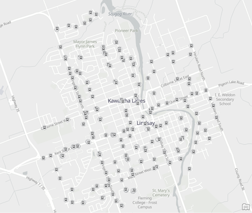
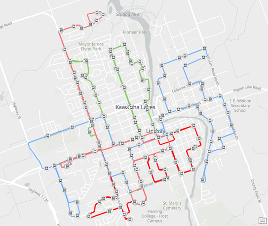
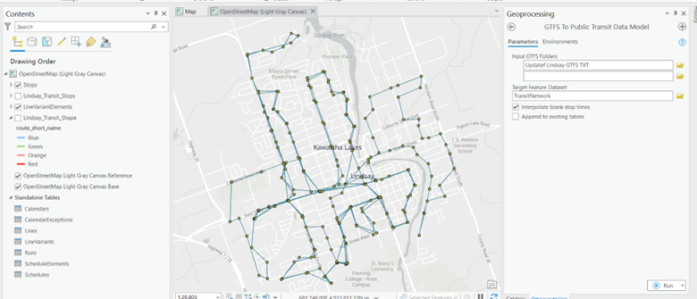
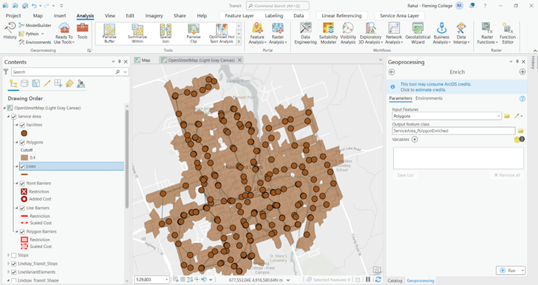
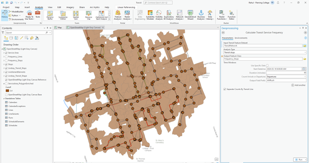
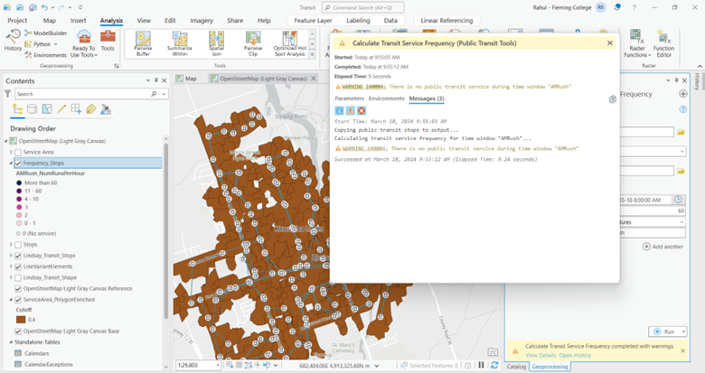

First to know about the routing features we should know about the raw data we collected. This acts as the data tier for us and the middle and web tier would be the Esri Experience Builder.
Generalized Transit Feed Specification (GTFS) is the general form for transit data around the world which includes stops, schedules, and routes (shape). The dataset we downloaded contains trips, stops, stop times, shapes, routes, feed info, calendar dates, agency, all these in txt file.
The preprocessing includes converting the point features such as stops and routes to their respective features.
The ArcGIS Pro environment has a toolbox specific to transit data that is Public Transit toolbox. Firstly, we converted stops.txt file to stops in map. Next, we converted the shapes to line features that represent the routes. This was executed by GFTS stops to features and GFTS shapes to features tools respectively.
GTFS stops to features: From the stops text file converting the point features as stops in the pro environment. These are the updated stops as per 2023.
GTFS shapes to Features: Converting the shape text file to their corresponding line feature that is route features and segregating them into 4 transit routes, since Lindsay has 4 routes namely green, red, orange, blue.
GFTS to public transit data model: This is a specific model the ESRI has for processing the transit data to convert them into the data preferred by them. This helps in further processing the to catch the buffer area and analysing the extent of each stops.
Enrich tool: Next step will be using the enrich tool to populate the polygon data with the population data
Calculate transit function frequency: This tool calculates the frequency of the transit bus, that is how frequent is the buss service in that stop, since Lindsay we have only one hour once bus service.
While calculating the frequency hours I have to insert parameters that is 60 minutes interval since Lindsay transit stops frequency operates one hour once.
We thoughtthis tool failed because of the prefix I did there is no AMRush in Lindsay transit stop so deleting that and running the tool again to see the possible outcomes. Sharing the data to AGOL, as far as I completed the process and I have reached the time limit for this processing so uploading each layers in to AGOL. Right click each layer > sharing > share as a web layer.
NOTE: Don't ever pre-process the GFTS data other than if your going to do a network analysis for the transit dataset. These items are waste of our time for one week which we are not using in any of our project. Rather than this, import the files into the AGOL, since this data set is in text format convert them into csv files and import them into the AGOL as features.